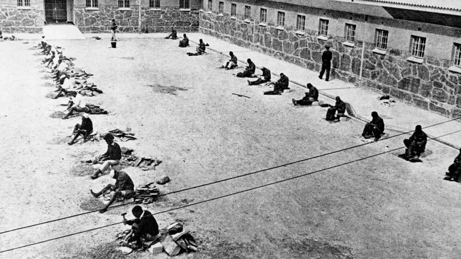

Dr. Nelson Mandela
Nelson Mandela: A Beacon of Hope and Resilience in the Fight for Human Rights

Nelson Mandela stands as a symbol of perseverance and dignity, embodying the struggle for justice and equality. This image captures the essence of Mandela's enduring legacy as a champion of freedom and an advocate for peace.
Dr Nelson Rolihlahla Mandela's Timeline:
- 1918 - July 18 Born Rolihlahla Mandela in the village of Mvezo in Umtata, then part of South Africa's Cape Province.
- 1941 - Moves to Johannesburg and becomes involved in anti-colonial and African nationalist politics.
- 1944 - Helps form the African National Congress (ANC) Youth League.
- 1948 - The National Party comes to power in South Africa and begins implementing apartheid policies.
- 1952 - Mandela and Oliver Tambo open the first black law firm in South Africa. Leads the Defiance Campaign against apartheid laws and is convicted for violating the Suppression of Communism Act; receives a suspended prison sentence.
- 1956 - Arrested and charged with treason along with 155 other activists; the charges are dropped after a lengthy trial.
- 1960 - The Sharpeville Massacre occurs, where police kill 69 peaceful protesters. The ANC is banned.
- 1961 - Co-founds the militant Umkhonto we Sizwe (MK), the armed wing of the ANC, advocating for armed struggle against apartheid.
- 1962 - Travels abroad to seek military training and garner support for the ANC. Arrested upon his return to South Africa and sentenced to five years in prison for leaving the country illegally and inciting workers to strike.
- 1964 - Sentenced to life imprisonment in the Rivonia Trial for sabotage and other charges.
- 1982 - Transferred from Robben Island to Pollsmoor Prison in Cape Town.
- 1990 - February 11: Released from Victor Verster Prison after 27 years of imprisonment. Begins negotiations to dismantle apartheid and establish multiracial elections.
- 1991 - Elected President of the ANC.
- 1993 - Awarded the Nobel Peace Prize jointly with President F.W. de Klerk for their work in peacefully ending apartheid.
- 1994 - April 27: South Africa holds its first multiracial elections. May 10: Inaugurated as South Africa's first black president.
- 1999 - Steps down as president after one term, continuing to work on various humanitarian and diplomatic efforts.
- 2004 - Retires from public life to spend more time with his family.
- 2013 - December 5: Passes away at the age of 95.
"Nelson Mandela was a giant of history, who moved a nation towards justice, and in the process moved billions around the world. His journey from a prisoner to a President embodied the promise that human beings—and countries—can change for the better. His commitment to transfer power and reconcile with those who jailed him set an example that all humanity should aspire to whether in the lives of nations or our own personal lives."
--- former U.S. President Barack Obama.